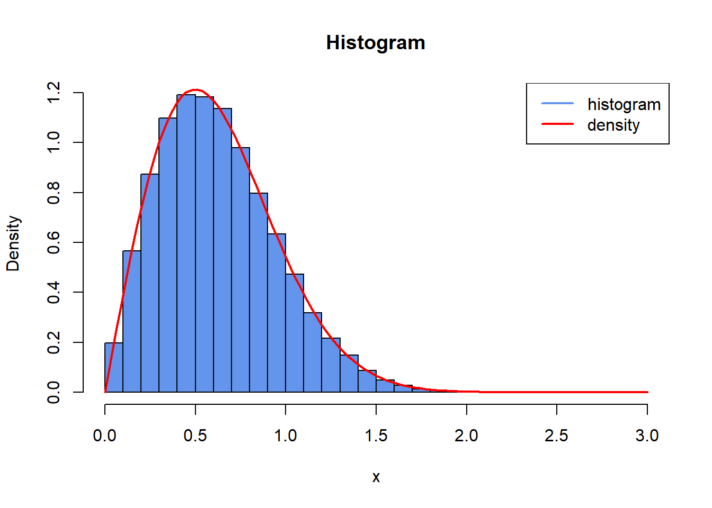
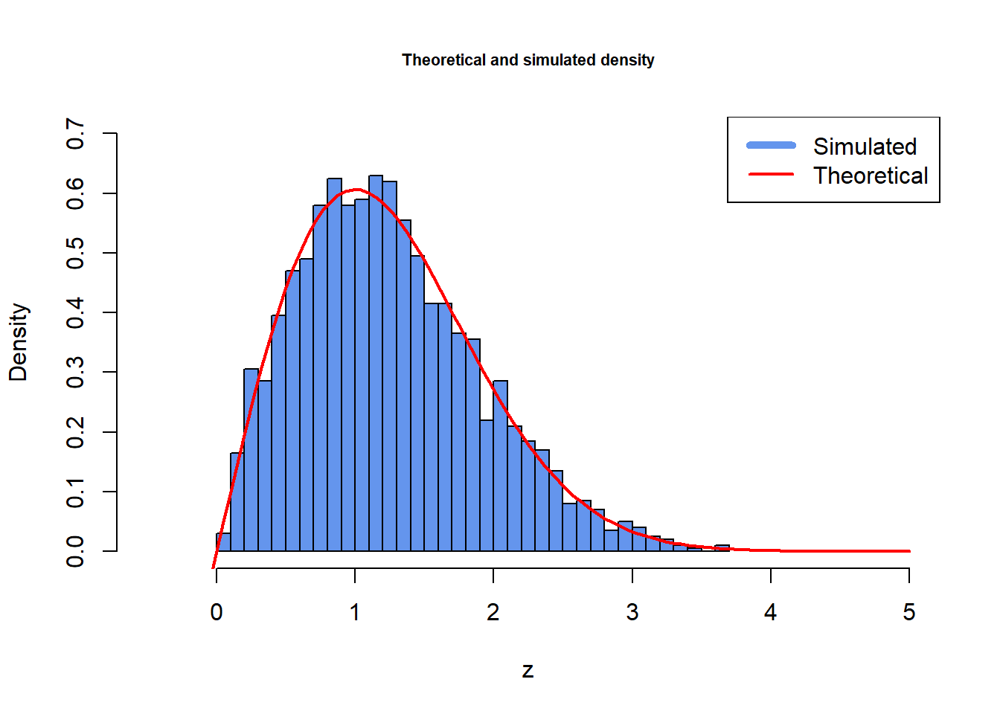

set.seed(123)
rndRayleigh <- function(lambda, size) {
# lambda - intensity of the exponential distribution
# size - number of i.i.d. random variables to be drawn
U <- runif(size)
return(-1/lambda * log(U))
}
set.seed(123) # set seed
# matrix size and default variables
iT <- 1000
iN <- 100
lambda <- 2
# simulate data, y
y <- rndRayleigh(lambda, iT * iN)
x <- sqrt(y)
mR <- matrix(x, iT, iN)26 Ordinary exam 2024
26.1 Problem 1
Begin by setting the seed to 123.
26.1.1 Problem 1.1
- Write a function
rndRayleighto simulate a random variable using the inversion method.- First, use the inversion method to simulate data \(y\) from the Exponential distribution \(y \sim \text{Exp}(\lambda)\) with the parameter \(\lambda = 2\).
- The cumulative distribution function (CDF) of the exponential distribution is given as: \[G(y) = 1 - e^{-\lambda y}.\]
- Define a new random variable \(x = \sqrt{y}\).
- Store simulated random variables \(x\) in the matrix
mRof size \(T \times N\), where \(T = 1000\) and \(N = 100\).
Solution:
26.1.2 Problem 1.2
- Calculate empirical moments using a vector-based command (Lecture on Vector-based programming using functions).
- Define a constant \(\gamma = \frac{1}{\sqrt{2\lambda}}\), and parameters \(\mu = \gamma \sqrt{\frac{\pi}{2}}\) and \(\sigma^2 = \frac{4-\pi}{2} \gamma^2\).
- Using a vector-based command, calculate the mean \(\bar{\mu}\) and variance \(\bar{\sigma}^2\) of each column of the matrix
mR, and subtract the values of \(\mu\) and \(\sigma^2\), storing them separately in the vectorsvmuErrorandvsigmaError. Each of these vectors must be of dimension \(N \times 1\). - Calculate the mean and standard deviation of the elements of the vectors
vmuErrorandvsigmaError.
Solution:
# defining the constants
gamma <- 1 / (sqrt(2 * lambda))
mu <- gamma * sqrt(2 / pi)
sigma2 <- (4 - pi) / 2 * gamma^2
# mean and variance of each column
mu_hat <- colMeans(mR)
sigma2_hat <- apply(mR, 2, var)
# store the errors
vmuError <- mu_hat - mu
vsigmaError <- sigma2_hat - sigma2
# calculate mean and std of these
mean(vmuError)
#> [1] 0.228063
mean(vsigmaError)
#> [1] -0.0006383356
sqrt(var(vmuError))
#> [1] 0.009235813
sqrt(var(vsigmaError))
#> [1] 0.00454209526.1.3 Problem 1.3
- Produce histogram and density plots.
Create a histogram of the data contained in any of the columns of the matrix
mR.-
Calculate the density function based on the parameter values \(\gamma\) as follows:
\[f(x) = \frac{x}{\gamma^2} \exp\left(-\frac{x^2}{2\gamma^2}\right).\]
Add a plot of this density function to the histogram.
Solution:
# histogram
hist(mR,
freq = FALSE,
breaks = 30,
col = "cornflowerblue",
xlab = "x",
ylab = "Density",
main = "Histogram",
xlim = c(0, 3))
# superimpose the density function
fDensity <- function(x, gamma) {
return((x / gamma^2) * exp(-(x^2 / (2*gamma^2))))
}
curve(fDensity(x, gamma),
from = 0,
to = 3,
col = "red",
lwd = 2,
add = TRUE)
legend("topright",
legend = c("histogram", "density"),
col = c("cornflowerblue", "red"),
lwd = 2)
26.1.4 Problem 1.4
- Produce histogram and density plot using the Box-Muller algorithm.
Simulate two standard random normal variables \(y_1\) and \(y_2\) using the Box-Muller Algorithm, each of size 1000.
Define a new random variable \(z = \sqrt{y_1^2 + y_2^2}\) and store it in a vector
vz. The vector is of size \(1000 \times 1\).Plot a histogram of the data contained in the vector
vz.-
Add a density plot to the histogram, where the density is given by
\[f(z) = z \exp\left(-\frac{z^2}{2}\right).\]
Solution:
BoxMuller <- function(size = 1) {
# size: number of standard bivariate normal random variables to simulate
U <- runif(size)
V <- runif(size)
X <- sqrt(-2*log(U)) * cos(2*pi*V)
Y <- sqrt(-2*log(U)) * sin(2*pi*V)
return(c(X,Y))
}
y_1 <- BoxMuller(1000)
y_2 <- BoxMuller(1000)
vZ <- sqrt(y_1^2 + y_2^2)
# histogram
hist(vZ, breaks = 35, freq = FALSE,
main = "Theoretical and simulated density",
col = "cornflowerblue",
xlim = c(-0.5, 5), ylim = c(0, 0.7),
xlab = "z",
cex.main = 0.7)
fDensityNew <- function(z) {
return(z * exp(- z^2/2))
}
x <- vZ
curve(fDensityNew(x),
from = -0.5,
to = 5,
col = "red",
lwd = 2,
add = TRUE)
legend("topright", legend = c("Simulated", "Theoretical"), lty = c(1, 1), lwd = c(5, 2), col = c("cornflowerblue", "red"))
26.2 Problem 2: (Constrained) Optimization, C++, and Packaging
Note: This problem is best solved in order from 1 - 6.
In this problem, you will work with the d.R file provided with the exam. It contains a sample of \(T=250\) draws from a binomial distribution with number of trials \(n=10\) and unknown probability \(p\). The probability density function is \[f(k, n, p) = P(d_t=k) = \binom{n}{k} p^k (1-p)^{n-k},\] where \(\binom{n}{k} = \frac{n!}{k!(n-k)!}\) denotes the binomial coefficient.
26.2.1 Problem 2.1
- Load the data file
d.Rinto your R workspace usingreadRDS().
Solution:
vD <- readRDS("d.R")You will find the maximum likelihood estimator of \(p\) by numerically maximizing the average log-likelihood using Newton’s Method (recall Lecture 8). For this purpose, you will need the average log-likelihood: \[\ell(p|n,d) = \frac{1}{T} \sum_{t=1}^T \left[ \log \binom{n}{d_t} + d_t \log(p) + (n-d_t)\log(1-p) \right], \quad (1)\] the average score: \[s(p|n,d) = \frac{1}{T} \sum_{t=1}^T \left[ \frac{d_t}{p} - \frac{n-d_t}{1-p} \right], \quad (2)\] and the average second derivative: \[sd(p|n,d) = \frac{1}{T} \sum_{t=1}^T \left[ -\frac{d_t}{p^2} - \frac{n-d_t}{(1-p)^2} \right]. \quad (3)\] (Remark: By log, we always mean the natural logarithm.)
26.2.2 Problem 2.2
- Write an R function called
log_n_choose_k, which computes the first term of in equation (1) above. It should accept two integer arguments \(n\) and \(k\), and return the log binomial coefficient: \[\log \binom{n}{k} = \begin{cases} 0 & \text{if } k=0 \\ \sum_{i=n-k+1}^n \log(i) - \sum_{i=1}^k \log(i) & \text{otherwise} \end{cases}\]
- Write an R function called
Solution:
- Create a C++ script and write a C++ function called
log_n_choose_k_cppwhich does the same as your R function in part (a).
Solution:
#include <Rcpp.h>
using namespace Rcpp;
// [[Rcpp::export]]
double log_n_choose_k_cpp(int n, int k) {
if (k == 0) {
return(0);
} else {
double dSumPart1 = 0;
double dSumPart2 = 0;
for (int i = (n - k + 1); i <= n; i++) {
dSumPart1 = dSumPart1 + log(i);
}
for (int i = 1; i <= k; i++) {
dSumPart2 = dSumPart2 + log(i);
}
return(dSumPart1 - dSumPart2);
}
}suppressMessages(library(Rcpp))
#> Warning: pakke 'Rcpp' blev bygget under R version 4.3.3
sourceCpp("cpp_functions.cpp")
# naive check that the functions are equal
log_n_choose_k(10, 3)
#> [1] 4.787492
log_n_choose_k_cpp(10, 3)
#> [1] 4.78749226.2.3 Problem 2.3
- Write three R functions
fLnL,fScore, andfSDwhich implement equations (1)-(3) respectively. They should accept a decimal number \(p\), an integer \(n\), and an integer vector \(d\) as arguments.
- Write three R functions
Solution:
fLnL <- function(p, n, d) {
result <- numeric(length(d))
for (i in 1:length(d)) {
result[i] <- log_n_choose_k(n, d[i]) + d[i] * log(p) + (n - d[i]) * log(1 - p)
}
return(mean(result))
}
fScore <- function(p, n, d) {
return(mean(d / p - (n - d) / (1 - p)))
}
fSD <- function(p, n, d) {
return(mean(-(d / p^2) - (n - d) / ((1 - p)^2)))
}- Write three C++ functions
fLnL_cpp,fScore_cpp, andfSD_cpp, which do the same as your R functions in part (a). In your R script, include asourceCpp()command from the Rcpp package which compiles the C++ script and adds all C++ functions from questions 2 and 3 to your environment. Remark: If you cannot solve question 2, you may skip the \(\log \binom{n}{k}\) term in thefLnLandfLnL_cppfunctions.
// [[Rcpp::export]]
double fLnL_cpp(double p, int n, vec d) {
int len = d.n_elem;
vec result(len);
for (int i = 0; i < len; i++) {
result[i] = log_n_choose_k_cpp(n, d[i]) + d[i] * log(p) + (n - d[i]) * log(1 - p);
}
return(mean(result));
}
// [[Rcpp::export]]
double fScore_cpp(double p, int n, vec d) {
return(mean(d / p - (n - d) / (1 - p)));
}
// [[Rcpp::export]]
double fSD_cpp(double p, int n, vec d) {
return(mean(-(d / pow(p, 2)) - (n - d) / pow((1 - p), 2)));
}26.2.4 Problem 2.4
- Write an R function called
Newtonwhich maximizes the average log likelihood in equation (1) using Newton’s Method. This function should have the following arguments: a function to be maximized, its first derivative, its second derivative, a starting value, a tolerance threshold, maximum number of iterations, and other arguments which need to be passed the function you’re maximizing and its derivatives (i.e. \(n=10\) and \(d\)). It should return a list containing the value which maximizes the function, the maximum itself, and it should give an indication whether convergence was achieved or not.
Run this function using fLnL_cpp, fScore_cpp, and fSD_cpp as the inputs, and use starting value \(p=0.5\). Compare the optimal value of \(p\) you find with the analytical maximum \(p^* = \left(\frac{1}{T} \sum_{t=1}^T d_t\right)/n\). Remark: You may adapt the example code from Lecture 8 if you wish. If you cannot implement the C++ functions in questions 2 or 3, you may use the corresponding R functions to do this optimization instead, for partial credit.
Solution:
Newton <- function(f, f_prime, f_sec, X0, Tol = 1e-9, max.iter = 1000, ...){
dX <- X0
fx <- f(dX, ...)
fpx <- f_prime(dX, ...)
fsx <- f_sec(dX, ...)
i <- 0
while ((abs(fpx) > Tol) && (i < max.iter)) {
dX <- dX - fpx/fsx
fx <- f(dX, ...)
fpx <- f_prime(dX, ...)
fsx <- f_sec(dX, ...)
i <- i + 1
#cat("At iteration", n, "the value of x is:", dX, "\n")
}
if (i == max.iter) {
return(
list(
maximizing.val = NULL,
maximum = NULL,
"Algorithm failed to converge. Maximum iterations reached.")
)
} else {
return(
list(
maximizing.val = dX,
maximum = f(dX, ...),
"Algorithm converged.")
)
}
}
# Newton max
Newton(fLnL_cpp, fScore_cpp, fSD_cpp, 0.5, n = 10, d = vD)
#> $maximizing.val
#> [1] 0.2032
#>
#> $maximum
#> [1] -1.543041
#>
#> [[3]]
#> [1] "Algorithm converged."
# Analytical max
p.star <- mean(vD) / 10
p.star
#> [1] 0.2032Suppose you obtain additional information that the \(p\) which maximizes the likelihood lies somewhere between 0.1 and 0.9. You will use reparameterization to enforce this constraint. Consider the transformation \(p = \lambda(\tilde{p}) = 0.1 + 0.8 \frac{\exp(\tilde{p})}{1+\exp(\tilde{p})}\), such that \(p\) is between 0.1 and 0.9 for any value of \(\tilde{p}\). This transformation has a corresponding transformed average log-likelihood \[\tilde{\ell}(\tilde{p}|n,d) = \ell(\lambda(\tilde{p})|n,d) = \frac{1}{T} \sum_{t=1}^T \left[ \log \binom{n}{d_t} + d_t \log(\lambda(\tilde{p})) + (n-d_t)\log(1-\lambda(\tilde{p})) \right]. \quad (4)\]
26.2.5 Problem 2.5
- Write a new R function
fLnL_t, which implements equation (4).
- Write a new R function
Solution:
- Maximize the transformed average log-likelihood using the function
optim(oroptimize(your choice)), paying close attention to the initial values/bounds that you use. Report the maximum and maximizer you find, making sure that those results are transformed back into the original scale, such that they are comparable with the results you found in question 4.
Solution:
26.2.6 Problem 2.6
- Create an R package that contains the all functions you wrote for questions 2-5, and edit the Title of your package in the description file to “This is my exam package”. Export the package as a bundled development version (with file extension .tar.gz), and include it as part of your exam submission. Remark: If you cannot solve questions 2-5, create a package that contains an R and a C++ function with single scalar input that always return the number 2024.